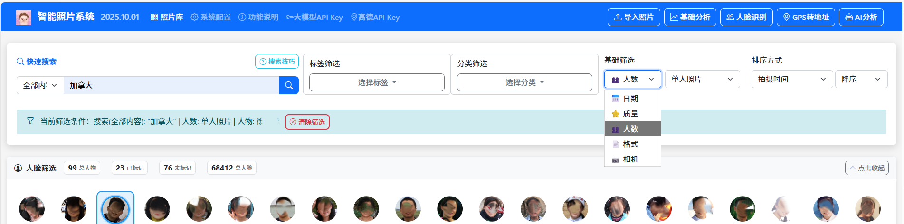
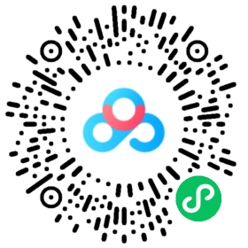

家庭版智能照片系统v4版 - 功能说明
数据永不离身，绝对隐私无忧 基于AI技术的智能照片管理平台
一、系统概述
基于AI技术的智能照片管理平台，支持照片自动分析、分类、标签生成、重复检测、相似照片匹配、人脸识别与人物管理、GPS转地址多服务解析等。
🌟数据永不离身，绝对隐私无忧：您的照片数据始终存储在您控制的本地设备中，既可以安心放在家里，也可以随身携带。从不上传到任何云端服务，彻底杜绝泄密风险，确保家庭隐私完全自主掌控。真正的便携式设计，解压即用，一次配置处处可用。
🛡️ 核心特性
| 🔒 数据永不离身 隐私无忧 | 🏠 家庭组网 随时随地访问 | 🤖 智能分析 灵活选择 |
|---|---|---|
| ✅ 放在家里安心 ✅ 从不上传云端 ✅ 本地存储便携 ✅ 隐私完全自主掌控 | ✅ 一台主机多端同步 ✅ 多设备无缝访问 ✅ 触摸友好操作 ✅ 家庭共享协作 | ✅ 基础分析（免费） ✅ AI分析（深度识别） ✅ 人脸识别 ✅ 重复检测 |
| 🔍 超强搜索和统计功能 | 👤 人脸识别与管理 | 📍 GPS转地址 多服务 |
|---|---|---|
| ✅ 全文搜索中文分词 ✅ 多条件筛选 ✅ 相似照片匹配 ✅ 超强统计功能 | ✅ 自动识别照片上的人脸 ✅ AI智能聚类 ✅ 本地处理安全 ✅ 按人物筛选 | ✅ 高德API/Nominatim/离线 ✅ 智能选择服务 ✅ 批量/单张转换 ✅ 全球地址解析 |
二、快速开始
🪟 Windows 用户
扫码本文档下方百度云共享链接，下载 最新版
PhotoSystem-Portable.zip解压到一个足够存储家庭照片的目录
双击运行
PhotoSystem.exe直接启动或者运行
startup.bat获得更好的用户体验初次启动，仅需等待1分钟，之后再次启动，秒速完成
启动完成后，请不要关闭启动窗口
🌐 访问系统
🎉 启动完成后，在浏览器中访问： http://127.0.0.1:8000
也可在家庭的其他设备上，根据启动页的提示，在浏览器中访问：http://主机ip地址:8000
导航栏功能： 页面顶部提供快速入口，包括基础分析、GPS转地址、人脸识别、AI分析等核心功能按钮。



⚙️ 首次使用建议
导入照片到系统中
先进行基础分析（免费、快速的质量评估）
再进行GPS转地址（高德API、Nominatim或离线解析）
启动人脸识别（本地AI模型，自动聚类人物）
选择性进行AI分析（深度内容识别，需要API密钥）
使用智能搜索和筛选功能管理照片
享受智能照片管理体验！
建议申请并配置免费额度大模型API密钥以便对照片进行更深入分析；如选用高德API解析照片地址，也需申请并配置免费额度高德API密钥
三、核心功能使用
3.1 📥 照片导入
系统支持多种方式导入照片，确保您的家庭照片库完整且有序。
单文件上传： 点击"导入照片"按钮，选择单个文件上传
文件夹扫描： 选择"扫描文件夹"模式，批量导入整个文件夹
智能处理： 自动生成缩略图，支持同时处理多张照片
格式支持： JPG、PNG、HEIC等多种常见照片格式
3.2 🤖 智能分析（基础分析 + AI分析）
系统提供分步骤的智能分析功能，先进行基础分析获取质量评估，再可选择进行AI深度分析。
🎯 分析功能分为两步
| 📊 基础分析（免费） | 🤖 AI分析（需申请AI密钥） |
|---|---|
| ✅ 质量评估： 分析照片的技术质量，包括清晰度、亮度、对比度、色彩、构图等指标 ✅ 基础标签：生成时间标签、EXIF标签等基础信息 ✅ 处理速度：本地处理，速度快，完全免费 ✅ 无需网络：可在离线环境下使用 | ✅ AI内容分析： 使用千问大模型识别照片中的物体、场景、人脸、情感等，生成详细描述 ✅ 智能分类：基于AI分析结果自动为照片添加合适的标签和分类 ✅ 需要网络：需要有效的API密钥和网络连接 |
⚠️ 智能分析注意事项
基础分析：
完全免费，无需网络连接
本地处理，速度快，资源占用少
可离线使用
已处理过的照片可以重新分析
AI分析：
需要有效的阿里云DashScope千问大模型API密钥
处理时间与照片数量、复杂度、网络状况有关
已处理过的照片可以重新分析以更新AI分析结果
建议在网络稳定时进行批量处理
处理过程中请勿关闭当前浏览器窗口
3.3 📍 GPS转地址（多服务支持）
将照片中的GPS坐标信息转换为可读的地理地址，支持多种解析服务，功能更强大。
🌍 GPS转地址功能
| 🎯 支持的服务 | ⚙️ 配置要求 |
|---|---|
| ✅ 高德地图API： 国内地址详细准确，推荐使用 ✅ 离线数据库：无需网络，全球主要城市 ✅ Nominatim API：全球覆盖，需科学上网 ✅ 智能切换：根据地点选择最佳服务 ✅ 批量/单张：支持批量转换和单张照片转换 | ⚠️ 高德地图： 需配置API密钥（国内推荐） ⚠️ 离线模式：无需任何配置 ⚠️ Nominatim：无需密钥，需VPN ⚠️ 智能选择：系统自动选择可用服务 |
⚠️ GPS转地址注意事项
API配置：
首次使用前需要配置高德地图API密钥
访问系统配置页面设置API密钥
配置后无需重启应用即可生效
照片要求：
相机必须在拍摄时开启GPS定位
iPhone手机拍照前需在设置中允许相机访问位置信息
GPS信息不完整的照片无法转换
3.4 👤 人脸识别与人物管理
智能识别照片中的人脸，自动聚类同一个人物，方便您按人物浏览和整理家庭照片。
🔍 人脸识别功能
| 🤖 核心功能 | ⚙️ 使用要求 |
|---|---|
| ✅ 人脸检测： 自动识别照片中的人脸并提取特征 ✅ 智能聚类： 使用AI算法将相似人脸聚类到同一个人物组 ✅ 肖像生成： 自动为每个聚类选择最佳肖像照片 ✅ 人物筛选： 按人物筛选照片，快速找到特定人物 ✅ 批量管理： 批量处理、合并、拆分人物聚类 | ⚠️ 预置模型： 模型已在系统中内置，无需下载 ⚠️ 本地处理： 完全本地运行，无需网络连接 ⚠️ 隐私安全： 所有人脸数据存储本地，绝对安全 ⚠️ 处理速度： 取决于照片数量，支持批量处理 |
🎯 人脸识别的使用方式
开始人脸识别：
入口： 点击导航栏"人脸识别"按钮
批量处理： 系统自动识别所有照片中的人脸
进度显示： 显示处理进度和处理统计信息
人物管理：
查看人物： 浏览系统识别的所有人物分组
重命名人物： 为人物设置友好名称
优化肖像： 可选择自动生成高质量圆形头像
⚠️ 人脸识别注意事项
处理时间：
人脸识别处理速度很快，约为每秒5-10张照片
大量照片可能需要较长时间，请耐心等待
处理过程中请勿关闭当前浏览器窗口
准确性提示：
人脸清晰、正面照片识别准确率最高
侧面、模糊、戴口罩照片可能识别失败
3.5 🔍 智能搜索
强大的搜索功能让您快速找到需要的照片，支持多种搜索方式和条件组合。
全文搜索： 支持多文本组合全文搜索，支持中文分词和复杂查询
关键词搜索： 支持文件名、描述、标签、分类、AI分析结果搜索
条件筛选： 按日期、质量、相机、格式、肖像、标签、分类等条件精确筛选
相似照片： 通过图片悬停功能快速发现相似照片
搜索建议： 基于热门标签和分类的智能建议
3.6 🖼️ 照片显示
系统提供多种照片查看和操作方式，让您能够方便地浏览、管理和欣赏您的照片收藏。
👁️ 照片浏览模式
网格视图： 以网格形式显示照片缩略图，便于快速浏览和选择
列表视图： 以列表形式显示，包含更多详细信息和批量操作选项
全屏查看： 点击照片可进入全屏查看模式，欣赏照片细节
幻灯片播放： 连续播放照片，支持自动和手动控制播放速度
⚙️ 照片操作功能
悬停预览： 鼠标悬停显示照片详细信息和快速操作按钮
相似照片： 点击相似照片按钮查看内容相似的相关照片
编辑信息： 修改照片描述、添加或编辑标签和分类
批量操作： 选择多张照片进行批量删除、移动或分类
📋 照片详情查看
EXIF信息： 查看拍摄参数、相机型号、镜头信息、GPS位置等
AI分析结果： 显示AI识别的场景、物体、人物、情感等分析结果
质量评估： 查看清晰度、亮度、对比度、色彩等质量指标
标签管理： 查看和编辑照片的所有标签和分类信息
3.7 ⚙️ 系统配置
通过系统配置页面，您可以根据个人需求调整系统的各项参数和功能设置。
配置项说明：
AI服务设置： 配置大模型选择和API密钥
存储设置： 配置照片大小限制和缩略图参数
地址解析设置： 配置GPS转地址服务和API密钥
界面设置： 调整每页显示照片数和相似照片数量
搜索设置： 配置相似度阈值和重复检测阈值
配置操作：
修改配置： 在各配置项中调整参数值
保存配置： 点击"保存配置"按钮应用更改
重置配置： 点击"重置为默认"按钮恢复默认值
导出配置： 点击"导出配置"按钮备份当前配置
四、配置管理
🤖 AI服务设置
大模型选择： qwen-vl-plus、qwen-vl-plus-latest等
API密钥： 从阿里云DashScope获取，支持环境变量
安全提示： 优先使用环境变量，避免配置文件明文存储
🗺️ 地址解析服务设置
支持的服务： 高德地图API、离线数据库、Nominatim API
高德地图： 需要API密钥，国内地址详细准确（推荐）
离线数据库： 无需配置，全球主要城市
Nominatim： 无需密钥，全球覆盖（需科学上网）
配置方式： 系统配置页面设置默认服务，或使用环境变量
智能选择： 可设置每次都询问，或默认使用某个服务
安全建议： 定期更换API密钥，避免泄露
💾 存储设置
文件大小限制： 25MB、50MB、100MB、200MB可选
缩略图设置： 质量50%、尺寸300像素推荐
重要提醒： 更改目录前先备份原有数据
🎨 界面设置
每页显示照片数： 6、12、18、24、30张可选
相似照片数量： 4、8、12张可选
推荐配置： 每页12张照片，相似照片8张
🔍 搜索设置
相似度阈值： 0.0-1.0，推荐0.6
重复检测阈值： 1-20，推荐5
平衡配置： 准确性和召回率的良好平衡
五、多设备访问
🏠 家庭组网访问
系统支持同一家庭网络内的多设备同时访问，实现家庭照片的共享和协作管理。
🌐 局域网访问设置
确保设备在同一网络： 电脑、手机、平板连接到同一个WiFi
获取主机IP地址： 在主机上运行
ipconfig或ifconfig其他设备访问： 浏览器输入
http://主机IP地址:8000防火墙设置： 确保端口8000未被防火墙阻止
🔒 远程访问（可选）
⚠️ 安全提醒： 远程访问需要谨慎配置，确保网络安全。
端口转发： 路由器设置端口转发到服务器的8000端口
动态域名： 可选使用花生壳等动态域名服务
VPN访问： 推荐使用VPN进行安全远程访问
防火墙： 只开放必要的端口和IP段
📱 设备兼容性
桌面浏览器： Chrome 90+、Firefox 88+、Edge 90+、Safari 14+
移动设备： iOS Safari、Android Chrome等现代移动浏览器
平板设备： 完美支持触摸操作，适合家庭成员使用
响应式设计： 自动适配不同屏幕尺寸
六、数据永不离身，本地存储无忧
🛡️ 既安全又便携，本地存储的最佳选择
我们的系统完美实现了安全与便携的统一：数据永不离身，既可以安心放在家里，也可以随身携带。从不上传云端，彻底杜绝泄密风险，让您随时随地安全地管理自己的家庭照片。
🏠 家庭硬盘存储
安心放在家里： 将系统安装在家庭电脑的硬盘上，所有照片、智能分析结果、标签数据完全存储在自家硬盘中，完全由您掌控。适合长期家庭使用，享受稳定的本地存储体验。
🏡 家庭优势： 杜绝任何数据泄密风险，您的家庭照片永远安全在家园守护下。
🎒 随身携带便携
随时带在身上： 将系统安装在U盘或移动硬盘上，随身携带您的完整照片管理系统。即插即用，无论走到哪里，都能立即访问您的家庭照片，享受真正的"数据永不离身"体验。
✈️ 便携优势： 特别适合旅行、办公、出差等场景，您的照片数据时刻跟随在身边。
🔐 使用无痕，数据永不离身
即用即走，安全无忧： 仅需保证浏览器的安全访问，系统不会在使用的电脑上留下任何痕迹。使用完成后直接拔出设备即可，不会占用系统资源，也不会遗留个人数据。您的照片数据始终存储在您的移动设备中，真正实现了"数据永不离身"的安全理念。
🛡️ 安全优势： 仅需浏览器安全访问，在任何设备上使用都绝对安全，您的家庭隐私时刻在您的掌控之中。
💼 应用场景
| 💼 商务演示 | 🏠 家庭聚会 | 🏢 办公室使用 | ✈️ 旅行随行 |
|---|---|---|---|
| 数据永不离身，U盘随身携带，在客户现场即插即用，展示系统功能时数据时刻在掌控之中。 | 移动硬盘随身携带，走到哪里家就在哪里，在任何地方都能安全分享家庭美好时光。 | U盘插上就用，用完即拔即走，工作数据永不离身，办公隐私完全自主掌控。 | 移动硬盘装进行李，旅途中随时查看家庭照片，美丽回忆时刻相伴，数据永不离身。 |
七、API密钥配置
⚠️ 重要： 建议申请并配置免费额度大模型API密钥以便对照片进行更深入分析；如选用高德API解析照片地址，也需申请并配置免费额度高德API密钥
🤖 获取AI分析API密钥（阿里云DashScope）
访问 阿里云DashScope 官网
注册账号并完成实名认证
进入API-KEY管理页面
创建新的API密钥
复制生成的API密钥
🗺️ 获取GPS转地址API密钥（高德地图）
访问 高德地图开放平台
注册账号并完成开发者认证
进入控制台创建新应用
为应用添加地理编码API服务
获取应用的API Key
⚙️ 配置方式
访问 系统配置页面，找到相应部分，配置DashScope API密钥和高德API密钥，点击"保存配置"
🛡️ 安全建议
定期更换API密钥，建议每3-6个月更换一次
不要在公共场所或不安全网络环境下使用系统
API密钥泄露时立即更换，并检查是否有异常使用记录
合理控制API使用频率，避免超出服务商的免费额度
八、系统要求
| 💻 硬件要求 | 🔧 软件要求 |
|---|---|
| ✅ 处理器： Intel i5/Ryzen 5及以上（推荐i7/Ryzen 7） ✅ 内存：8GB RAM及以上（推荐16GB） ✅ 存储：100GB可用空间（推荐SSD，提高访问速度） ✅ 网络：稳定的互联网连接（用于AI分析，支持离线缓存） | ✅ 操作系统： Windows 10/11、macOS 10.15+、Ubuntu 18.04+ ✅ 浏览器：Chrome 90+、Firefox 88+、Safari 14+、Edge 90+ ✅ 依赖服务：DashScope API、SQLite |
九、技术支持
🆘 获取帮助
查看系统日志了解详细错误信息：
logs/app.log检查配置文件格式是否正确
确认系统权限设置
🔍 问题诊断
日志查看： 检查logs/app.log文件
配置检查： 验证config.json文件格式
权限检查： 确认文件和目录权限
📞 联系支持
系统问题： 查看日志文件
配置问题： 参考本帮助文档
技术问题： 联系开发人员 alva_xu@sina.com
十、推广与支持
🌟 自由推广
如果您觉得这个照片管理系统好用，不妨分享给您的家人和朋友。您的推荐是我们最大的动力！
链接: https://pan.baidu.com/s/1cu0zt4R-Bp6BhLAx3bWcWw?pwd=1234 提取码: 1234

请点击链接或扫码下载最新版软件分享，让更多人享受到智能照片管理带来的便利
❤️ 支持我们
作为独立开发者，我们致力于不断改进系统，为您提供更好的使用体验。如果您愿意，可以通过扫码支持我们继续前行。
您的每一份支持，都是对我们持续改进的鼓励
💡 感谢您的使用！ 您的反馈和支持是我们前进的动力。
© 2025 家庭版智能照片系统 | 数据永不离身，隐私无忧